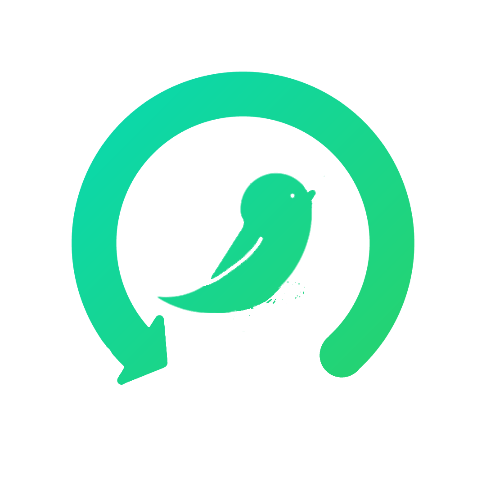

Android
iMons
6つのTwitter保存・ランキングサイトをひとつのアプリで。
検索、ランキング、ダウンロード、お気に入り管理まで。
Android 8.0 (Oreo) 以上対応
Features
快適な閲覧体験のために
ホームフィード
リスト・グリッド・ショート形式で最新動画を閲覧。レイアウトは自由に切り替え可能。
検索
キーワードでタグやユーザーを検索。人気順・新着順ソートで目的の動画へ素早くアクセス。
ランキング
24時間・3日・7日・週間・月間のランキングを各ソースごとにチェック。
ダウンロード
バックグラウンドダウンロード対応。キュー管理、リトライ、一括DLでオフライン視聴も快適。
ビデオプレイヤー
フルスクリーン、PiP（ピクチャ・イン・ピクチャ）、速度調整、ループ再生をサポート。
お気に入り
ユーザー・動画を保存してフォルダ管理。JSON / WiFi経由でエクスポート・インポート。
アプリロック
生体認証（指紋 / 顔認証）でアプリをロック。プライバシーを確保。
テーマ & アイコン
6種のカラーテーマと6種のアプリアイコンから自分好みにカスタマイズ。
Sources
6つの対応サイト
各サイトの新着・ランキングを統合的に閲覧できます。
monsnode
twishare
Twidro
TwiVideo
JAVTWI
Twitter動画保管庫
X (Twitter) 連携
Xアカウントと連携してポストから直接動画URLを取得。最大5アカウントのローテーションに対応。
Wayback Machine
リンク切れ時にアーカイブ版を確認。Save Page Nowでの保存にも対応。
Download
ダウンロード
GitHubのリリースページからAPKをダウンロードしてインストールしてください。
「提供元不明のアプリ」の許可が必要です。